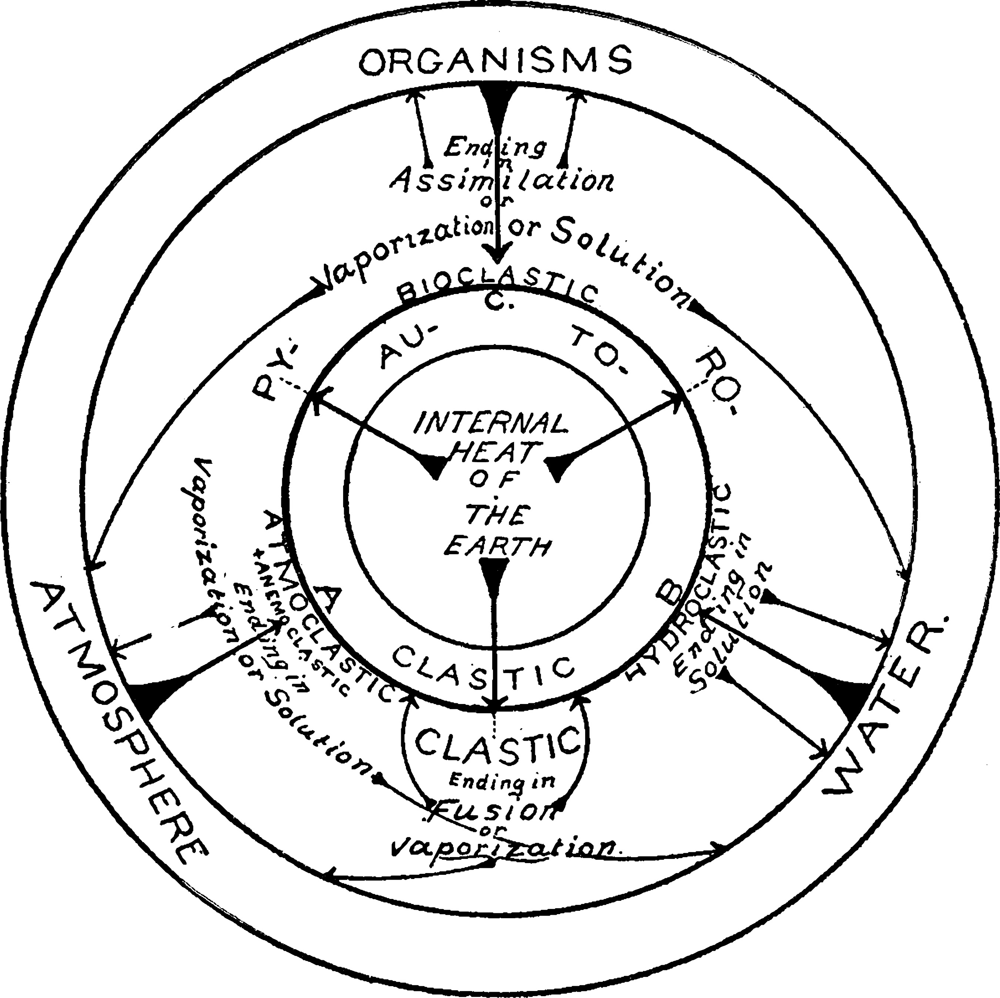

About
Yilin Yang's Personal Dictionary
EDRD 8310 – Theoretical Models & Processes of Literacy:
Examining the Intersections of Writing and Language
This digital platform serves as a space to define, explore, and
connect key terms, theories, scholars, and studies from the course
readings in EDRD 8310. Moving beyond simple definitions, the site
traces etymologies, tracks how concepts evolve across readings, and
builds conceptual maps to highlight relationships among ideas.
Together, these entries document an ongoing process of learning and
meaning-making as theories of literacy, writing, and language are
examined across texts and contexts.
01
Hip Hop Language
Definition
Hip Hop language refers to culturally situated language practices
rooted in Hip Hop culture that center Black Language, identity,
and critical consciousness. In educational contexts, it functions
as a liberatory linguistic resource that challenges white
linguistic supremacy and affirms students’ linguistic humanity.
How the Concept Appears in This Reading
In Hip Hop Language Pedagogies for Liberation, Mooney et
al. (2023) frame Hip Hop language not simply as a mode of
expression, but as a pedagogical and political stance. The
authors position Hip Hop language as a response to Anti-Black
Linguistic Racism, arguing that schools often dehumanize Black
students by demanding conformity to white mainstream English.
Through Hip Hop and spoken word pedagogies, the authors
illustrate how centering Hip Hop language creates a Black
linguistic counter-space that sustains Black linguistic
consciousness and resists dominant language ideologies.
My Notes
- Hip Hop language is more than slang; it is a cultural, rhetorical, and political practice.
- Mooney et al. frame it not simply as expression, but as a pedagogical and political stance.
- It positions Black linguistic practices as resources for learning rather than deficits to be corrected.
- It creates a counter-space where students can connect literacy, identity, performance, and critique.
- It helps explain how language pedagogy can either reproduce oppression or support liberation.
Why It Matters
- It expands what counts as language and literacy in classrooms.
- It connects literacy instruction to race, voice, and power.
- It is useful for future work on Black Language and culturally sustaining pedagogy.
Connections to Other Concepts
-
Black Language: Hip Hop language builds on Black Language as a
structured, rule-governed linguistic system.
-
Critical Linguistic Consciousness: The use of Hip Hop language
supports students’ awareness of language, power, and identity.
- BLACK LINGUISTIC JUSTICE
- Critical Language awareness
Reference
Mooney, B., Hickson, J., Oliver, A., Pierce, J., &
Baker-Bell, A. (2023). Hip Hop Language Pedagogies for Liberation:
A Critical Cultural Cypher on Language, Race, and Education.
Equity & Excellence in Education, 56(4), 574–588.
https://doi.org/10.1080/10665684.2023.2297188
02
Linguistic Healing
Definition
Linguistic healing is a restorative and therapeutic process for
students who have experienced psychological or emotional harm
because of linguistic racism or discrimination. It centers and
validates students’ home languages and dialects, such as Black
Language, in order to rebuild a positive connection between
language and self-identity.
Key Explanation from Mooney et al. (2023)
In this text, linguistic healing is presented as a response to
Anti-Black Linguistic Racism. The authors describe it as a way
to mend the soul of learners who have been told that their
natural way of speaking is wrong, broken, or unintelligent
within the school system.
Instructional Context (The Cypher)
Within a Critical Cultural Cypher, linguistic healing occurs
when students are given space to use their full linguistic
repertoire, including Hip Hop culture and vernacular, without
fear of judgment. This process allows them to humanize
themselves and their communities through their own words.
Why It Matters
- It names the restorative work needed after language-based harm.
- It connects language pedagogy with dignity, identity, and emotional repair.
- It is especially useful for future work on Black Language, anti-racist pedagogy, and humanizing literacy education.
Connections
Hip Hop Language; Cypher; Pedagogies for Liberation; Linguistic
Justice; Anti-Black Linguistic Racism; Black Language.
Reference
Mooney, B., Hickson, J., Oliver, A., Pierce, J., & Baker-Bell,
A. (2023). Hip Hop Language Pedagogies for Liberation: A
Critical Cultural Cypher on Language, Race, and Education.
Equity & Excellence in Education, 56(4), 574-588.
https://doi.org/10.1080/10665684.2023.2297188
03
Critical AI Literacy
Definition
Critical AI Literacy is a framework for understanding AI not as
neutral code, but as a sociotechnical system shaped by human
values, data histories, political interests, and unequal power
relations.
Expanded Notes
- It asks who builds AI systems, whose data they rely on, and who benefits or is harmed.
- It treats AI output as produced knowledge, not objective truth.
- It is especially relevant to writing because AI now affects composing, feedback, tutoring, and assessment.
- It connects technical awareness with social critique, ethics, and justice.
- It raises questions about authorship, bias, surveillance, and epistemic authority.
Why It Matters
- It helps students and researchers question AI rather than simply trust it.
- It links digital literacy with power, ideology, and equity.
- It is useful for future work on writing technologies and academic knowledge production.
Connections
Cyber Writing; digital literacy; algorithmic bias; authorship;
surveillance; data ethics; epistemic justice.
Reference
Kent, M. (2025). Critical AI Literacy: What Is It and Why It
Matters. Retrieved from
https://mikekentz.substack.com/p/critical-ai-literacy-what-is-it-and
04
Cyber Writing
Definition
Cyber Writing refers to writing produced in digital environments,
where immediacy, interaction, circulation, and technological
mediation shape how texts are composed, revised, and read.
Expanded Notes
- Cyber Writing is not just print writing moved online; digital platforms change writing itself.
- It often includes multimodal elements such as links, images, comments, and layout.
- Digital environments reshape audience, visibility, speed, and revision.
- In the age of AI, cyber writing also raises questions about originality and human-machine collaboration.
- It is useful for thinking about writing as social, technological, and rhetorical action.
Why It Matters
- It broadens what counts as writing beyond print-based models.
- It helps explain how platforms and tools shape composing practices.
- It connects writing studies with digital rhetoric and media studies.
Connections
Critical AI Literacy; multimodality; digital rhetoric; platform
studies; authorship; remix.
Reference
Warner, J. (2022). More than words: How to think about writing
in the age of AI. Basic Books.
05
Linguistic Justice
Definition
An antiracist approach to language and literacy education that
works to dismantle Anti-Black Linguistic Racism and white
linguistic supremacy while centering Black Language and Black
liberation.
Expanded Notes
- Linguistic justice is not just about accepting difference; it is about changing oppressive language systems.
- It argues that dominant language standards are historical and political, not neutral.
- It connects classroom correction, assessment, and curriculum to racial power.
- It supports pedagogies that affirm students’ home languages and build critical consciousness.
- It is a foundational concept for anti-racist literacy education.
Why It Matters
- It names the political stakes of language instruction.
- It helps move beyond deficit views of students’ language practices.
- It is central for research on race, literacy, and educational equity.
Connections
White Mainstream English; anti-Black linguistic racism; Black
Language; translanguaging; code-switching; language ideology.
Reference
Baker-Bell, A. (2020). Linguistic justice: Black language,
literacy, identity, and pedagogy. Routledge.
06
White Mainstream English
Definition
The socially dominant and institutionally privileged form of
English positioned as the norm in schools and public life.
Expanded Notes
- This term makes visible the racialized nature of what is often called “standard English.”
- White Mainstream English functions as a gatekeeping norm for intelligence, professionalism, and academic legitimacy.
- It helps explain why other language practices are often treated as deficient or inappropriate.
- The concept reveals how language standards are tied to whiteness and institutional power.
- It is useful for analyzing correction, assessment, and linguistic assimilation.
Why It Matters
- It reveals the hidden politics of “proper English.”
- It helps explain how language norms reproduce inequity.
- It strengthens critiques of standard language ideology.
Connections
Linguistic Justice; Anti-Black Linguistic Racism; Language
Ideology; Translanguaging; Borderlands.
Reference
Baker-Bell, A. (2020). Linguistic justice: Black language,
literacy, identity, and pedagogy. Routledge.
07
Cypher
Definition
In Hip Hop culture, a cypher is a circular, participatory space
where individuals exchange ideas, stories, and freestyle
performances. In educational contexts, it functions as a
collaborative, dialogic, and non-hierarchical space for
co-constructing knowledge, expressing identity, and engaging in
critical discussions about language, race, and power.
Expanded Notes
- A cypher is not only a circle of performers; it is a social form of shared participation and response.
- It values listening, improvisation, reciprocity, and rhetorical presence.
- In classrooms, it can redistribute authority and challenge teacher-centered discourse.
- It supports identity expression, critical reflection, and communal meaning-making.
- It connects oral performance with literacy and pedagogy.
Why It Matters
- It expands literacy beyond silent individual text production.
- It offers a culturally sustaining model of collaborative learning.
- It is useful for research on dialogue, performance, and voice.
Connections
Hip Hop Language; dialogue; oral tradition; participatory
culture; community literacy; pedagogies for liberation.
Reference
Mooney, B., Hickson, J.M., Oliver, A., Pierce, J.T., &
Baker-Bell, A. (2023). Hip Hop Language Pedagogies for
Liberation: A Critical Cultural Cypher on Language, Race, and
Education. Equity & Excellence in Education, 56,
574-588.
08
Pedagogies for Liberation
Definition
Teaching approaches that center marginalized voices and
linguistic practices, aiming to empower students to critically
challenge systems of oppression, especially racial and linguistic
injustice, and to achieve intellectual, cultural, and social
liberation through education.
Expanded Notes
- Pedagogies for liberation treat education as transformation, not simple skill delivery.
- They center voice, critique, dialogue, and social awareness.
- In literacy education, they often affirm students’ language practices rather than demanding assimilation.
- They link classroom practice to larger struggles against oppression.
- They support students as active makers of meaning and possibility.
Why It Matters
- It reframes teaching as ethical and political work.
- It helps connect literacy education to justice and emancipation.
- It is useful for future work on anti-oppressive pedagogy.
Connections
Critical pedagogy; Hip Hop Language; linguistic justice; cypher;
student agency; culturally sustaining pedagogy.
Reference
Mooney, B., Hickson, J.M., Oliver, A., Pierce, J.T., &
Baker-Bell, A. (2023). Hip Hop Language Pedagogies for
Liberation: A Critical Cultural Cypher on Language, Race, and
Education. Equity & Excellence in Education, 56,
574-588.
09
Scaffolding
Definition
Temporary instructional support provided by a teacher or more
knowledgeable peer that enables learners to perform tasks beyond
their independent ability; this support is gradually withdrawn as
learners internalize skills and gain autonomy.
Expanded Notes
- Scaffolding is responsive support, not permanent help.
- It may include modeling, prompting, guided practice, questioning, feedback, and peer collaboration.
- The goal is not dependence, but gradual independence.
- In writing instruction, scaffolding often appears through conferences, mentor texts, and structured revision support.
- The concept is closely tied to Vygotskian views of mediated learning.
Why It Matters
- It explains how support can lead to development and autonomy.
- It helps teachers design instruction that is challenging but manageable.
- It is central for research on writing pedagogy and classroom interaction.
Connections
Zone of Proximal Development; mediation; sociocultural theory;
guided participation; collaboration.
Reference
Vanderburg, R. M. (2006). Reviewing research on teaching writing
based on Vygotsky’s theories: What we can learn.
Reading & Writing Quarterly, 22(4), 375–393.
10
Zone of Proximal Development
Definition
The distance between what a learner can do independently and what
they can achieve with guidance or collaboration from a more
knowledgeable other.
Direct Quote from the Reading
Vanderburg (2006, P.376): The ZPD is “the distance between the
actual development level as determined by independent problem
solving and the level of potential development as determined
through problem solving under adult guidance or in collaboration
with more capable peers” (Vygotsky, 1978, p. 86); it enables
learners to develop higher cognitive phenomena during social
interactions.
Expanded Notes
- The ZPD shifts attention from fixed ability to learning potential.
- It shows that development is social before it becomes internalized.
- What a learner can do with support today may become independent ability later.
- It helps explain why collaboration, mediation, and feedback matter in literacy learning.
- It is foundational for theories of scaffolding and guided participation.
Why It Matters
- It offers a strong theory of development through interaction.
- It helps teachers think about how support enables growth.
- It is central for research on learning, writing instruction, and sociocultural theory.
Connections
Scaffolding; sociocultural theory; mediation; collaboration;
guided participation; cognitive development.
Reference
Vanderburg, R. M. (2006). Reviewing research on teaching writing
based on Vygotsky’s theories: What we can learn.
Reading & Writing Quarterly, 22(4), 375–393.
11
Mediation
Definition
Mediation refers to the process through which learning and
development are shaped through tools, signs, language, social
interaction, and guidance from others rather than occurring in a
direct or purely individual manner.
Expanded Notes
- In Vygotskian theory, human action is always mediated by cultural tools and social relations.
- Language is one of the most important mediational tools because it supports thinking, interaction, and meaning-making.
- Scaffolding can be understood as one form of mediation, since support from a teacher or peer helps learners accomplish tasks beyond their independent capacity.
- Mediation shows that learning does not happen simply inside the mind; it is shaped by tools, dialogue, instruction, and context.
- In writing education, mediation may occur through conferences, prompts, peer talk, mentor texts, modeling, and revision guidance.
- This concept is useful because it explains how support, tools, and discourse transform cognitive activity.
Analytical Utility
- It provides a framework for analyzing how learning is socially and culturally supported.
- It is especially useful for examining scaffolding, tool use, and instructional interaction.
- It supports research on writing development, classroom discourse, and sociocultural learning.
- It helps connect individual growth with external supports and contexts.
Connections
Scaffolding; Zone of Proximal Development; Internalization;
sociocultural theory; tools; classroom discourse; guided
participation.
Reference
Smagorinsky, P. (2013). What Does Vygotsky Provide for the
21st-Century Language Arts Teacher? Language Arts, 90(3),
192-204.
12
Internalization
Definition
Internalization refers to the process through which socially
mediated activity gradually becomes part of an individual’s
independent thinking and performance.
Expanded Notes
- In Vygotskian theory, higher mental functions first appear in social interaction and are later internalized by the learner.
- Internalization does not mean simple copying; it involves transformation as external support becomes part of the learner’s own cognitive repertoire.
- This concept helps explain why guided participation, modeling, and scaffolding can eventually lead to independent performance.
- In writing instruction, students may first rely on teacher prompts, peer support, or structured tools, but over time these supports can become internal strategies.
- Internalization is closely tied to development because it explains how social activity becomes individual capability.
- The concept is useful for understanding the transition from assisted performance to self-regulated action.
Analytical Utility
- It helps explain how learning moves from social interaction to independent competence.
- It is useful for research on scaffolding, strategy development, and writing expertise.
- It supports analyses of how instructional supports become cognitive resources.
- It strengthens sociocultural explanations of development over time.
Connections
Mediation; Scaffolding; Zone of Proximal Development;
self-regulation; metacognition; writing development.
Reference
Smagorinsky, P. (2013). What Does Vygotsky Provide for the
21st-Century Language Arts Teacher? Language Arts, 90(3),
192-204.
13
Utilization Deficiencies
Definition
Utilization deficiencies refer to a phenomenon in which learners
possess knowledge of a strategy but fail to apply it effectively
due to cognitive overload or insufficient mental resources.
Expanded Notes
- Utilization deficiencies occur when the cognitive demands of a task exceed a learner’s available processing capacity.
- The concept highlights the difference between knowing a strategy and being able to use it successfully in real task conditions.
- In writing, students may understand revision or organizational strategies but fail to apply them while also managing idea generation, language production, and assignment demands.
- The concept is closely tied to cognitive load, showing that strategy use is resource-dependent rather than purely knowledge-dependent.
- Instructional supports such as scaffolding, modeling, and guided practice can reduce load and make strategy use more possible.
- As processes become more automated, utilization deficiencies often decrease.
- This concept complicates simplistic assumptions that strategy instruction alone guarantees improved performance.
Analytical Utility
- It provides a framework for analyzing the gap between strategy knowledge and actual performance.
- It is useful for examining how cognitive load influences the effectiveness of instruction.
- It supports research on scaffolding, strategy instruction, and the development of writing expertise.
- It helps explain why learners may appear inconsistent despite having prior knowledge.
Connections
Scaffolding; Zone of Proximal Development; cognitive load;
metacognition; strategy use; self-regulation; writing development.
Reference
Vanderburg, R. M. (2006). Reviewing research on teaching writing
based on Vygotsky’s theories: What we can learn.
Reading & Writing Quarterly, 22(4), 375–393.
14
Holistic Assessment
Definition
Holistic assessment refers to an approach to evaluation that
considers writing or learning performance as an integrated whole
rather than reducing it to isolated, decontextualized parts.
Expanded Notes
- Holistic assessment values the overall effectiveness, coherence, and meaning of a performance.
- In writing, this can mean attending to the total impact of a text rather than only counting errors or discrete features.
- The concept is especially useful when scholars or teachers want to preserve the complexity of literacy performance.
- A holistic approach can align with sociocultural and humanistic perspectives because it recognizes that performance emerges from many interacting factors.
- At the same time, holistic assessment needs careful criteria so that it does not become vague or overly impressionistic.
- It is important because it resists fragmenting writing into isolated subskills without context.
Analytical Utility
- It provides a framework for evaluating writing as integrated performance.
- It is useful for discussing assessment philosophy in language arts and literacy education.
- It supports alternatives to narrow, atomistic models of evaluation.
- It helps connect assessment with broader theories of writing, learning, and development.
Connections
Writing Ecosystem; Cognitive Process Theory; sociocultural theory;
assessment; writing development; instructional context.
Reference
Smagorinsky, P. (2013). What Does Vygotsky Provide for the
21st-Century Language Arts Teacher? Language Arts, 90(3),
192-204.
15
Procedures
Definition
Procedures are the explicitly taught “how-to” systems that show
students how to function within writing workshop, for example,
how to request a conference, how to transition to the rug, and
how to publish writing.
Expanded Notes
- Procedures explain how something is done, not just what is allowed.
- They create clarity, predictability, and structure for participation.
- In writing workshop, procedures shape how students draft, revise, confer, and publish.
- They reduce uncertainty and support more focused engagement with writing.
- They also reflect values about order, participation, and classroom norms.
Conceptual Chain: Procedures → Practice → Routine → Independence → Writing Growth
Why It Matters
- It helps explain how classroom organization supports literacy learning.
- It is useful for studying student participation and workshop structure.
- It connects teaching practice with classroom culture and access.
Connections
Routines; writing workshop; classroom management; participation
structures; scaffolding.
Reference
Dorfmin & Shubitz (2019). Welcome to Writing Workshop:
Engaging Today's Students with a Model That Works. Stenhouse.
Available for free at:
https://galileo-gsu.primo.exlibrisgroup.com/permalink/01GALI_GSU/goifvo/alma9922037005202931
16
Routines
Definition
Routines are the daily habits students internalize so they can
operate independently without teacher reminders.
Expanded Notes
- Routines are repeated patterns that make classroom life stable and predictable.
- Because they become familiar, they reduce cognitive load and support independence.
- In writing workshop, routines help students know how to begin, continue, and reflect on writing work.
- They also shape expectations about participation and classroom identity.
- Routines can therefore be studied both as support systems and as social norms.
Conceptual Chain: Procedures → Practice → Routine → Independence → Writing Growth
Why It Matters
- It shows how repetition supports literacy learning and independence.
- It helps explain classroom culture and daily participation.
- It is useful for future work on workshop teaching and social practice.
Connections
Procedures; classroom culture; social practice; habit;
participation structures; writing workshop.
Reference
Dorfmin & Shubitz (2019). Welcome to Writing Workshop:
Engaging Today's Students with a Model That Works. Stenhouse.
Available for free at:
https://galileo-gsu.primo.exlibrisgroup.com/permalink/01GALI_GSU/goifvo/alma9922037005202931
17
Student Agency
Definition
The ability of students to make choices about their writing
topics, processes, and goals within the workshop structure. This
approach transforms learners into active participants rather than
passive recipients in their education.
Expanded Notes
- Student agency involves meaningful choice, ownership, and intentional participation.
- It is not only about independence; it depends on whether the classroom makes real choice possible.
- In writing classrooms, agency appears when students select topics, make rhetorical decisions, and revise with purpose.
- Agency is closely tied to trust, authorship, and voice.
- It can be constrained by overly rigid, compliance-driven instruction.
Why It Matters
- It helps shift attention from passive learning to meaningful participation.
- It supports student-centered writing pedagogy.
- It is useful for research on motivation, voice, and authorship.
Connections
Authentic writing; voice; authorship; self-efficacy; pedagogies
for liberation; rhetorical agency.
Reference
Dorfmin & Shubitz (2019). Welcome to Writing Workshop:
Engaging Today's Students with a Model That Works. Stenhouse.
Available for free at:
https://galileo-gsu.primo.exlibrisgroup.com/permalink/01GALI_GSU/goifvo/alma9922037005202931
18
Alchemy (in Writing Research)
Definition
A metaphor used to describe early approaches to writing
instruction that relied on intuition, tradition, and unexamined
practices rather than systematic, empirical research; it
contrasts with later movements toward scientific and
methodological rigor in writing studies.
Expanded Notes
- “Alchemy” here does not celebrate mystery; it critiques unsystematic and unexamined teaching traditions.
- The term helps describe a historical shift in writing studies toward greater methodological rigor.
- At the same time, Poe argues for methodological plurality rather than a single rigid model of research.
- The concept is useful for understanding what counts as evidence and legitimacy in the field.
- It helps situate writing research historically and epistemologically.
Why It Matters
- It helps explain the development of writing studies as a discipline.
- It is useful for discussing research paradigms and methodology.
- It supports stronger framing for exams and dissertation literature reviews.
Connections
Evidence-Based Practice; methodological plurality; research
paradigms; epistemology; writing studies history.
Reference
Poe, M. (2019). Research in the Teaching of English: From alchemy
and science to methodological plurality.
The Journal of Writing Analytics, 3, 317–333.
19
Methodological Plurality
Definition
Methodological plurality refers to the use and recognition of
multiple research approaches, methods, and epistemological
traditions within a field, rather than privileging a single
model of inquiry.
Expanded Notes
- Methodological plurality argues that no single research method can fully capture the complexity of writing, literacy, or teaching.
- It resists the idea that only one kind of evidence counts as legitimate.
- In writing studies, it supports the coexistence of historical, qualitative, quantitative, rhetorical, ethnographic, and mixed-methods research.
- The concept is especially important because writing and literacy are complex social phenomena that require different kinds of explanation.
- Rather than treating methodological diversity as a weakness, it frames it as a strength of the field.
- It also encourages scholars to choose methods based on research questions rather than disciplinary hierarchy.
Analytical Utility
- It provides a flexible but rigorous framework for discussing research design.
- It is useful for explaining why writing studies includes many valid approaches to knowledge production.
- It supports dissertation framing when research questions cross methodological boundaries.
- It helps justify method choice without reducing rigor.
Connections
Alchemy in Writing Research; Evidence-Based Practice;
epistemology; research design; writing studies history; textual
analysis; ethnography.
Reference
Poe, M. (2019). Research in the Teaching of English: From
Alchemy and Science to Methodological Plurality.
The Journal of Writing Analytics, 3, 317-329.
20
Textual Transactions
Definition
Textual transactions refer to the dynamic exchanges that occur
among writers, texts, readers, contexts, and interpretive
frameworks as meaning is produced, negotiated, and transformed.
Expanded Notes
- The term emphasizes that texts do not simply carry fixed meaning from writer to reader.
- Meaning emerges through interaction among textual features, social context, audience interpretation, and writer intention.
- In writing research, textual transactions help scholars analyze how texts function within larger systems of circulation, reception, and response.
- The concept is especially useful when studying writing as social action rather than as isolated product.
- It can also support analysis of revision, feedback, and disciplinary discourse, where meaning is shaped through ongoing engagement with others.
- Textual transactions remind us that texts participate in relationships, not just representation.
Analytical Utility
- It provides a way to analyze writing as interactive and socially mediated.
- It is useful for studying reading-writing relationships, audience response, revision, and circulation.
- It supports rhetorical and discourse-oriented research in writing studies.
- It helps frame texts as sites of negotiation rather than static artifacts.
Connections
Methodological Plurality; rhetoric; discourse; audience;
revision; circulation; writing as social action.
Reference
Poe, M. (2019). Research in the Teaching of English: From
Alchemy and Science to Methodological Plurality.
The Journal of Writing Analytics, 3, 317-329.
21
Cultural-Historical Activity Theory
Definition
A theoretical framework that explains human learning and
development as mediated by cultural tools, social interactions,
and historically situated activities, emphasizing how
individuals act within systems shaped by communities, rules, and
division of labor.
Expanded Notes
- CHAT treats learning as participation in activity systems, not just individual cognition.
- It emphasizes tools, communities, rules, histories, and social roles.
- This framework is especially useful for studying literacy and writing in context.
- It also highlights contradictions within systems, which can generate change and development.
- It helps connect individual action to institutional and historical structures.
Why It Matters
- It provides a strong theory of context and mediation.
- It is useful for classroom, institutional, and writing research.
- It helps explain how tools and communities shape literacy practices.
Connections
Sociocultural theory; mediation; tools; Zone of Proximal
Development; activity systems; contradictions.
Reference
Smagorinsky, P. (2013). What does Vygotsky provide for the
21st-century language arts teacher?
Language Arts, 90(3), 192–204.
22
Linguistic Terrorism
Definition
Linguistic Terrorism refers to the way dominant language
standards are used to shame, silence, or control marginalized
speakers. In Borderlands, Anzaldúa uses the term to
describe how Chicanos are socially and academically punished for
speaking Chicano Spanish, Tex-Mex, or English with an accent.
Expanded Notes
- It is called “terrorism” because it produces fear, humiliation, and internalized shame around one’s voice.
- When people are constantly corrected or mocked, they may begin to doubt their intelligence and self-worth.
- The concept shows how deeply language is tied to identity, legitimacy, and power.
- It makes visible the emotional and social violence of language policing.
- It is especially powerful in analyses of schooling, assimilation, and racialized language norms.
Why It Matters
- It gives strong language to the harms of linguistic domination.
- It helps connect language ideology with lived emotional consequences.
- It is useful for work on borderlands, identity, and decolonial critique.
Connections
Code-switching; Hip Hop Language; linguistic justice; White
Mainstream English; borderlands; language shame.
Reference
Anzaldúa, Gloria. Borderlands: La Frontera: The New
Mestiza. 4th ed. San Francisco: Aunt Lute Books, 2012.
23
Shadow Beast
Definition
Shadow Beast is the rebellious and instinctive part of the self
that refuses to conform to social expectations. It challenges
oppression and becomes a source of inner strength and resistance.
Direct Quote from the Reading
Gloria (2012)--P38: “There is a rebel in me—the Shadow-Beast. It
is a part of me that refuses to take orders from outside
authorities. It refuses to take orders from my conscious will, it
threatens the sovereignty of my rulership. It is that part of me
that hates constraints of any kind, even those self-imposed. At
the least hint of limitations on my time or space by others, it
kicks out with both feet. Bolts.”
Expanded Notes
- Shadow Beast names an inner force of refusal, survival, and resistance.
- It connects psychic struggle to larger systems of domination rather than treating conflict as merely personal.
- The concept is useful for understanding anger, instinct, contradiction, and resistant selfhood.
- It can also help explain why writing and voice become sites of struggle and reclamation.
- It is especially important in borderlands and decolonial frameworks.
Why It Matters
- It helps theorize resistance as emotional and internal as well as social.
- It supports work on identity conflict, survival, and self-making.
- It broadens literacy study by including affect and embodiment.
Connections
mestiza consciousness; borderlands; linguistic terrorism; identity
conflict; decolonial thought.
Reference
Anzaldúa, Gloria. Borderlands: La Frontera: The New
Mestiza. 4th ed. San Francisco: Aunt Lute Books, 2012.
24
Mestiza Consciousness
Definition
A new form of consciousness produced at the intersection of
racial, cultural, linguistic, and ideological crossings; it
embraces contradiction, hybridity, and multiplicity.
Expanded Notes
- Mestiza consciousness develops through living between multiple identities, cultures, and languages.
- It resists rigid binaries and allows a person to hold contradiction without collapsing complexity.
- The concept is especially useful for understanding hybrid, border-crossing identities.
- It is intellectual, emotional, and political at once.
- In literacy studies, it helps explain how identity and meaning are negotiated rather than fixed.
Why It Matters
- It offers a strong framework for hybridity and identity negotiation.
- It is useful for work on multilingualism, migration, race, and decolonial thought.
- It helps resist essentialist categories and simplistic oppositions.
Connections
Shadow Beast; borderlands; translanguaging; hybridity; identity
negotiation; decolonial theory.
Reference
Anzaldúa, G. (2021). Borderlands/La Frontera: The New
Mestiza (5th ed.). Aunt Lute Books.
25
Evidence-Based Practice
Definition
Instructional practices that are grounded in systematic,
empirical research and have been demonstrated to be effective
through rigorous studies, particularly in improving students’
writing development and learning outcomes.
Expanded Notes
- Evidence-based practice suggests that teaching decisions should be informed by research rather than intuition alone.
- At the same time, it is important to ask what counts as evidence and whose knowledge is valued.
- A narrow version can privilege only measurable outcomes, while a broader version considers context and justice.
- The term is especially important in policy, curriculum, and intervention debates.
- It helps connect instructional practice with research methodology.
Why It Matters
- It is central to debates about effective writing instruction.
- It helps frame methodological and epistemological questions.
- It is useful for future work on pedagogy, assessment, and policy.
Connections
Alchemy in Writing Research; methodology; assessment;
accountability; social cognitive theory.
Reference
Graham, S., & Alves, R. A. (2021). Research and teaching
writing. Reading and Writing, 34, 1613–1621.
26
Translanguaging
Definition
Translanguaging is a practice and a process involving the dynamic
and functionally integrated use of different languages and
semiotic resources for meaning-making and knowledge construction.
Expanded Notes
- Translanguaging challenges the idea that languages exist as sealed and separate systems.
- It emphasizes the full linguistic repertoire of multilingual speakers.
- It can be understood both as a theory of language and as a pedagogical practice.
- It helps explain how multilingual people actually make meaning in everyday life.
- It reframes multilingualism as a resource rather than a problem.
Why It Matters
- It supports more inclusive and accurate approaches to multilingual literacy.
- It challenges monolingual assumptions in schools.
- It is useful for future work on language, identity, and equity.
Connections
Code-switching; unitary linguistic repertoire; dynamic bilingualism;
mestiza consciousness; linguistic justice; language repertoire.
Reference
Li Wei. (2018). Translanguaging as a practical theory of
language. Applied Linguistics, 39(1), 9–30.
https://doi.org/10.1093/applin/amx039
27
Unitary Linguistic Repertoire
Definition
Unitary linguistic repertoire refers to the idea that bilingual
and multilingual speakers draw from one integrated repertoire of
linguistic and semiotic resources rather than from two or more
fully separate language systems.
Expanded Notes
- This concept challenges the assumption that bilingual speakers keep named languages fully separated in their minds.
- It helps explain why multilingual meaning-making often looks fluid, mixed, and context-responsive.
- Named languages such as English or Spanish still matter socially, but speakers use features across those boundaries in practice.
- In classroom settings, this concept supports treating students' full repertoires as resources for learning rather than as interference.
- It is one of the conceptual foundations that makes translanguaging possible as both theory and pedagogy.
Why It Matters
- It helps teachers move away from rigid language separation.
- It offers a more accurate way to understand multilingual communication.
- It is useful for research on bilingualism, literacy, and classroom participation.
Connections
Translanguaging; Dynamic Bilingualism; Languaging vs. Language;
multilingualism; semiotic repertoire.
Reference
García, O., Johnson, S. I., & Seltzer, K. (2017).
The translanguaging classroom: Leveraging student bilingualism for learning.
Caslon.
28
Dynamic Bilingualism
Definition
Dynamic bilingualism refers to a view of bilingualism as fluid,
adaptive, and constantly evolving, where speakers strategically
use features from their full linguistic repertoire across
contexts rather than operating as two separate monolinguals.
Expanded Notes
- Dynamic bilingualism resists static models that measure bilinguals against monolingual norms.
- It emphasizes movement, flexibility, and context rather than balance between two neatly bounded languages.
- This concept helps explain how multilingual students shift their practices depending on audience, task, and purpose.
- In pedagogy, it supports classroom structures that allow students to think, speak, and write across their repertoires.
- It aligns closely with translanguaging by centering lived bilingual practice rather than idealized language separation.
Why It Matters
- It reframes bilingualism as a strength rooted in flexibility and responsiveness.
- It helps challenge deficit views of multilingual learners.
- It is useful for future work on literacy, identity, and bilingual education.
Connections
Translanguaging; Unitary Linguistic Repertoire; Code-switching;
bilingual education; linguistic justice.
Reference
García, O., Johnson, S. I., & Seltzer, K. (2017).
The translanguaging classroom: Leveraging student bilingualism for learning.
Caslon.
29
Code-switching
Definition
Code-switching is based on the assumption that languages are
separate structural and cognitive systems, focusing on switching
between them.
Expanded Notes
- Code-switching is often used to describe shifts across languages, varieties, or registers.
- In schooling, it is often framed as a useful strategy for navigating dominant institutions.
- Critical perspectives ask whether expectations to code-switch also reinforce assimilation.
- It can be both a rhetorical resource and a sign of linguistic pressure.
- Compared with translanguaging, it assumes more clearly separated language systems.
Why It Matters
- It helps explain how language users adapt to audience and context.
- It is useful for discussing power, professionalism, and identity performance.
- It sharpens the contrast between accommodation and linguistic freedom.
Connections
Translanguaging; White Mainstream English; rhetorical awareness;
identity performance; assimilation.
Key Distinction
Difference between code-switching and translanguaging:
Code-switching assumes switching between separate language
systems, whereas translanguaging views language as a unified
repertoire used dynamically for meaning-making.
In other words, code-switching usually starts from the idea that
languages are distinct and bounded, while translanguaging starts
from the lived reality that multilingual speakers draw flexibly
from all of their linguistic and semiotic resources at once.
This distinction matters in education because a code-switching
framework may emphasize adaptation to dominant norms, whereas a
translanguaging framework is more likely to affirm multilingual
meaning-making as natural, legitimate, and intellectually rich.
Reference
Li Wei. (2018). Translanguaging as a practical theory of
language. Applied Linguistics, 39(1), 9–30.
https://doi.org/10.1093/applin/amx039
30
Languaging vs. Language
Definition
Language: named and bounded systems such as
“English” or “Chinese,” treated as socially and politically
constructed entities.
Languaging: the active process through which
individuals draw on their full semiotic repertoire to make
meaning.
Difference
The difference is that language emphasizes named,
bounded, and socially recognized systems, while
languaging emphasizes the dynamic activity of
meaning-making. In other words, language is often treated as an
object, whereas languaging focuses on what people actually do
with their full communicative resources.
This distinction matters because it shifts attention from static
correctness to lived practice. It is especially useful in
multilingual and sociocultural approaches to literacy, where the
focus is on how people communicate, negotiate, and create meaning
in real contexts.
Why It Matters
- It supports more process-oriented understandings of language and literacy.
- It helps explain multilingual and multimodal meaning-making.
- It is useful for future work on discourse, mediation, and semiotics.
Reference
Li Wei. (2018). Translanguaging as a practical theory of
language. Applied Linguistics, 39(1), 9–30.
https://doi.org/10.1093/applin/amx039
31
Authentic Writing
Definition
Writing connected to real purposes, audiences, and contexts
rather than only school-based drills or formulaic tasks.
Expanded Notes
- Authentic writing is purposeful, meaningful, and directed toward a real or believable audience.
- It is often contrasted with task-based, formulaic, or purely school-compliance writing.
- The concept should be used carefully, since “authentic” depends on context and learner experience.
- Strong definitions of authenticity focus on relevance, purpose, audience, and ownership.
- It is especially important in writing workshop and student-centered pedagogy.
Why It Matters
- It helps explain why meaningful tasks often produce deeper engagement.
- It supports agency, audience awareness, and rhetorical thinking.
- It is useful for future work on writing workshop, voice, and motivation.
Connections
Student Agency; audience; rhetorical situation; voice; authorship;
community literacy.
Reference
National Council of Teachers of English. (2008).
Writing now: A policy research brief. NCTE.
32
Social Cognitive Theory
Definition
A theory that explains writing development through the
interaction of behavior, personal beliefs, and environment,
especially writers’ sense of efficacy and self-regulation.
Expanded Notes
- Social cognitive theory emphasizes reciprocal interaction among person, behavior, and environment.
- A key concept is self-efficacy: the belief that one can succeed at a task.
- In writing, self-efficacy influences persistence, revision, and willingness to take risks.
- The theory also highlights modeling, observation, and self-regulation.
- It is especially useful for understanding motivation and writing development in classrooms.
Why It Matters
- It helps explain how confidence and environment shape writing performance.
- It is useful for research on motivation, feedback, and persistence.
- It provides a helpful comparison point with sociocultural theory.
Connections
Self-efficacy; metacognition; self-regulation; Evidence-Based
Practice; writing development; modeling.
Reference
Hodges, T. S. (2017). Theoretically speaking: An examination of
four theories and how they support writing in the classroom.
The Clearing House, 90(4), 139–146.
33
Metacognition
Definition
Metacognition, in the context of writing, refers to the process
through which learners reflect on, monitor, and regulate their
own thinking, allowing them to evaluate new information and
transform knowledge through their own experiences.
Expanded Notes
- Metacognition involves planning, monitoring, evaluating, and revising one’s cognitive strategies during writing.
- It enables writers to move beyond surface concerns and engage in deeper meaning-making and rhetorical decision-making.
- In writing contexts, metacognitive activity may include setting goals, recognizing confusion, assessing clarity, and making deliberate revisions.
- Instructionally, metacognition can be supported through structured reflection, prompts, and guided response.
- Integrating writing across disciplines creates opportunities for metacognitive engagement because students must reinterpret and apply knowledge in new contexts.
- Metacognition is closely tied to independent learning and strategic control over complex tasks.
- This concept also highlights the importance of writing as a process of thinking, not merely a final product.
Analytical Utility
- It provides a framework for examining how writers develop strategic awareness and control over composing processes.
- It is especially useful for analyzing self-regulated learning, revision practices, and transfer across contexts.
- It supports research on how writing functions as a tool for thinking, knowledge construction, and disciplinary learning.
- It also helps explain how instructional practices foster or constrain cognitive engagement.
Connections
Self-regulation; social cognitive theory; writing process;
scaffolding; reflection; transfer; student agency.
Reference
Hodges, T. S. (2017). Theoretically speaking: An examination of
four theories and how they support writing in the classroom.
The Clearing House, 90(4), 139–146.
34
Cognitive Process Theory
Definition
Cognitive Process Theory conceptualizes writing as a complex,
goal-directed system of interrelated cognitive processes, rather
than a linear or purely creative activity.
Expanded Notes
- Originally developed by Flower and Hayes (1981), this theory models writing as a dynamic interaction among planning, translating, and reviewing processes.
- A key principle is that writing is recursive, meaning writers move back and forth among idea generation, drafting, and revision.
- The theory emphasizes both high-level goals, such as rhetorical purpose, and lower-level goals, such as sentence construction.
- It also highlights the role of memory, knowledge, and the task environment in shaping composing.
- Writers adapt their processes depending on the demands of the task and their available cognitive resources.
- Instructionally, this perspective supports quick writes, planning tools, and process-focused teaching rather than immediate correctness.
- The theory challenges product-oriented approaches by foregrounding writing as ongoing cognitive activity.
Analytical Utility
- It offers a foundational framework for analyzing writing as a cognitive and recursive process.
- It is useful for examining how writers manage goals, organize ideas, and revise under different task conditions.
- It supports research on writing development, process pedagogy, and the interaction between cognition and performance.
- It also provides a basis for studying how instruction influences composing behavior.
Connections
Metacognition; writing process; recursion; goal-directed
activity; scaffolding; cognitive load; strategy use.
Reference
Hodges, T. S. (2017). Theoretically speaking: An examination of
four theories and how they support writing in the classroom.
The Clearing House, 90(4), 139–146.
35
Writing Ecosystem
Definition
The Writing Ecosystem refers to the interconnected set of factors
that influence writing development, including cognitive
processes, instructional practices, social contexts, and
environmental conditions.
Expanded Notes
- The concept frames writing not as an isolated skill but as an activity shaped by multiple interacting components.
- These components may include individual factors, instructional elements, and broader contextual influences.
- Rather than focusing on one cause of success or difficulty, the writing ecosystem emphasizes dynamic relationships among elements.
- It highlights how changes in one part of the system can influence other aspects of writing development.
- This perspective aligns with systems thinking, recognizing writing as situated within a network of interactions.
- It foregrounds the importance of context, support, and environment in understanding writing performance.
- As such, it offers a holistic way of thinking about writing instruction and learning.
Research Significance
- It offers a systems-level framework for analyzing writing development across cognitive, pedagogical, and contextual dimensions.
- It is useful for examining how instructional practices interact with student characteristics and learning environments.
- It supports research that moves beyond isolated variables to consider complex, interdependent influences on writing outcomes.
- It also provides a basis for studying how reforms or interventions affect writing at multiple levels of the system.
Connections
Cognitive Process Theory; Metacognition; Scaffolding; Zone of
Proximal Development; Social Cognitive Theory; instructional
context; writing development.
Reference
Graham, S. (2019). Changing How Writing Is Taught.
36
Reciprocity of Writing and Reading
Definition
This concept refers to the bidirectional and functional
relationship between reading and writing, where development in
one domain directly supports and enhances development in the
other.
Key Explanation from Graham & Alves (2021)
Graham and Alves argue that reading and writing are
mutually reinforcing skills. Writing about what one
reads can deepen reading comprehension, while learning to read
gives students insight into text structure, language patterns,
and discourse moves that can strengthen their writing.
Scientific Context
The article emphasizes that interventions in one area often
produce spillover effects in the other. For example, teaching
spelling as a writing or transcription skill can also improve
reading because it strengthens phonological awareness and word
recognition.
Why It Matters
- It challenges the idea that reading and writing should be taught as isolated skills.
- It offers a strong rationale for integrated literacy instruction.
- It is useful for future work on disciplinary literacy, comprehension, and composition pedagogy.
Connections
Writing Ecosystem; Metacognition; transcription; comprehension;
spelling; literacy transfer.
Reference
Graham, S., & Alves, R. A. (2021). Research and teaching
writing. Reading and Writing, 34(7), 1613-1621.
https://doi.org/10.1007/s11145-021-10188-9
37
Writing Intervention
Definition
Writing intervention refers to a deliberate, research-informed
instructional effort designed to improve one or more aspects of
students’ writing development, such as transcription, planning,
revising, genre knowledge, or overall composing quality.
Expanded Notes
- In Graham and Alves (2021), writing intervention is framed within a scientific approach to teaching writing that asks what practices measurably improve student outcomes.
- Interventions may target different dimensions of writing, including spelling, handwriting, planning, strategy instruction, revision, and text generation.
- The concept is important because it links theory and research to classroom action rather than leaving writing instruction at the level of general belief.
- It also highlights that effective writing teaching often requires structured and explicit support, not just opportunities to write.
- Some interventions produce broader literacy benefits, including improvements in reading and related language skills.
Why It Matters
- It provides a practical bridge between writing research and classroom pedagogy.
- It helps identify which teaching practices are most likely to improve writing performance.
- It is useful for future work on literacy instruction, educational reform, and evidence-based pedagogy.
Connections
Reciprocity of Writing and Reading; Evidence-Based Practice;
Writing Ecosystem; spelling; strategy instruction; instructional design.
Reference
Graham, S., & Alves, R. A. (2021). Research and teaching
writing. Reading and Writing, 34(7), 1613-1621.
https://doi.org/10.1007/s11145-021-10188-9
38
Longitudinal Research
Definition
Longitudinal research refers to a research design in which
investigators study people, communities, or practices over an
extended period of time in order to trace change, continuity,
and development across years or decades.
Expanded Notes
- Longitudinal research is especially valuable when a scholar wants to understand development as a process rather than a single snapshot.
- It makes it possible to study how literacy practices, identities, relationships, and institutions evolve over time.
- In community and family literacy studies, longitudinal work can reveal how historical, economic, and social changes reshape everyday language and literacy practices.
- This kind of research often produces richer interpretations of continuity and transformation than short-term observation can provide.
- It is methodologically demanding because it requires sustained engagement, documentation, and attention to changing contexts.
- It also helps scholars avoid overly static conclusions about people or communities.
Analytical Utility
- It provides a framework for studying literacy development across time rather than at one isolated moment.
- It is useful for examining how family, school, work, and community practices shift historically.
- It supports research on identity formation, social change, and intergenerational literacy.
- It strengthens interpretations of development by revealing patterns of continuity and change.
Connections
Narrative Arc; family literacy; ethnography; community literacy;
developmental change; social history; home-school relations.
Reference
Heath, S. B. (2012). Words at work and play: Three decades in
family and community life. Cambridge University Press.
39
Narrative Arc
Definition
Narrative arc refers to the unfolding trajectory or patterned
movement of events, experiences, and meanings across time in a
person’s life, a community’s history, or a research account.
Expanded Notes
- In research, narrative arc helps organize how change is interpreted over time rather than as disconnected events.
- It is especially useful in longitudinal and ethnographic work because it allows scholars to trace continuity, disruption, turning points, and development.
- A narrative arc can describe personal development, family histories, literacy pathways, or community transformation.
- It does not simply mean storytelling; it also provides an analytical structure for interpreting how experiences accumulate and shift.
- In literacy research, narrative arcs help scholars connect everyday practices with broader historical and social changes.
- The concept is valuable because it links lived experience with temporality, sequence, and meaning-making.
Analytical Utility
- It helps researchers interpret development as patterned and historically situated.
- It is useful for analyzing life histories, community change, and literacy trajectories.
- It supports qualitative research that values temporality and human experience.
- It strengthens the interpretation of longitudinal and ethnographic data.
Connections
Longitudinal Research; ethnography; life history; literacy
trajectory; identity development; community change.
Visual

Figure: Narrative Arc as a model of patterned development over time.
Reference
Heath, S. B. (2012). Words at work and play: Three decades in
family and community life. Cambridge University Press.
40
Non-linearity of Life Paths
Definition
Non-linearity of life paths is a conceptual framework in social
anthropology that describes human development as dotted lines
rather than straight, predictable trajectories. It suggests that
individuals do not follow a fixed path determined solely by
socio-economic or generational background.
Key Explanation from Heath (2012)
In her longitudinal study of the Roadville and Trackton
families, Heath challenges the essential linearity often assumed
by anthropologists. She describes life paths as being made of
spots of time and place where promises may not be kept, latent
powers may find opportunity, and past errors may urge a grand
retrieval.
The Web Metaphor
Instead of imagining a straight line from poverty to the middle
class, Heath views these paths as spinning out into webs of
differing proportion, strength, and connection, where beginnings
and endings can occur at many stages of life.
Why It Matters
- It challenges deterministic accounts of human development.
- It helps researchers interpret lives as contingent, relational, and historically shaped.
- It is especially useful for longitudinal, ethnographic, and literacy research concerned with change over time.
Connections
Longitudinal Research; Narrative Arc; ethnography; life history;
community change; home-school mismatch.
Reference
Heath, S. B. (2012). Epilogue. In Words at work and play:
Three decades in family and community life (pp. 166-173).
Cambridge University Press.
41
Mismatch (Home–School Mismatch)
Definition
A disconnect or lack of alignment between the linguistic habits,
narrative styles, and literacy practices a student acquires at
home and the standardized expectations, norms, and codes of the
school environment. This gap often leads to marginalized
students being mislabeled as deficient when they are actually
using a different cultural logic.
Expanded Notes
- Home–school mismatch shifts attention away from student deficiency and toward institutional expectations.
- It can involve differences in language use, participation style, narrative structure, and literacy socialization.
- The concept helps explain why schools often misrecognize cultural difference as incapacity.
- It is especially useful for connecting language, identity, and educational inequity.
- It also invites educators to rethink whose literacy practices are treated as normal.
Why It Matters
- It helps educators interpret difference more fairly.
- It supports culturally responsive and sustaining pedagogy.
- It is useful for future work on literacy socialization and educational equity.
Conceptual Map & Evolution
-
Compared with Linguistic Justice: Heath
identifies the mismatch, while Baker-Bell shows how language
mismatch is tied to anti-Black linguistic racism and active
suppression.
-
Compared with Funds of Knowledge: one response
to mismatch is to identify and value the cultural and literacy
resources students bring from home.
-
Connection to Warner (2022): AI-generated
“standard” writing can be read as an extension of schooling
that fears difference and rewards standardization.
Connections
Funds of Knowledge; culturally responsive pedagogy; linguistic
justice; discourse mismatch; identity; classroom norms.
Reference
Heath, S. B. (1983). Ways with words: Language, life, and work
in communities and classrooms. Cambridge University Press.